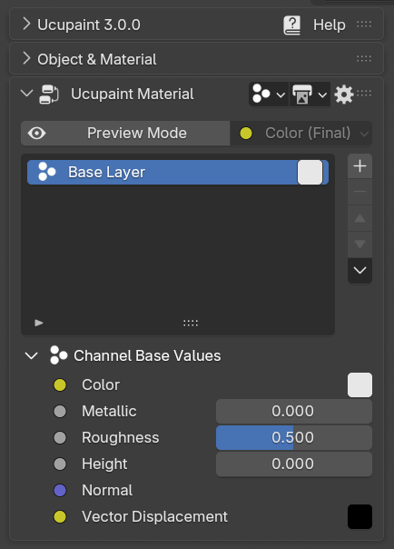
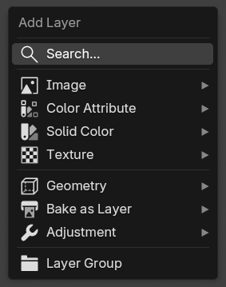
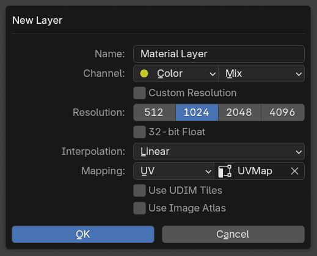
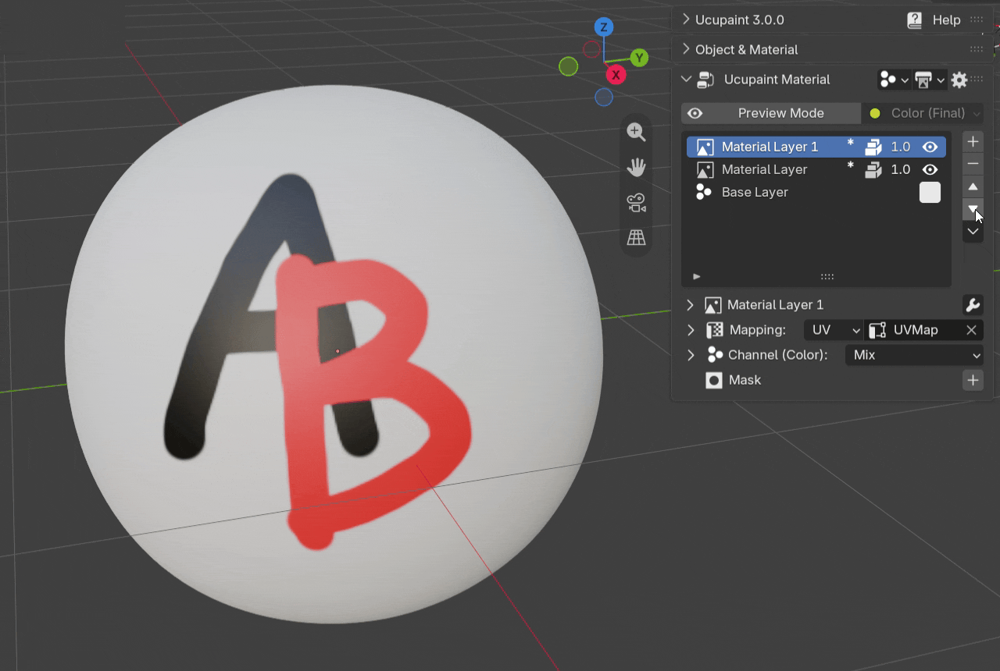
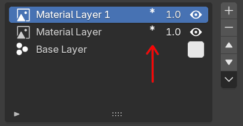
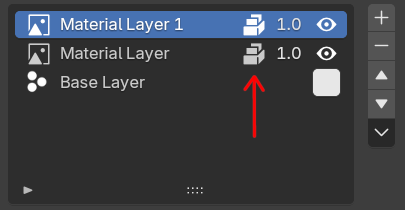
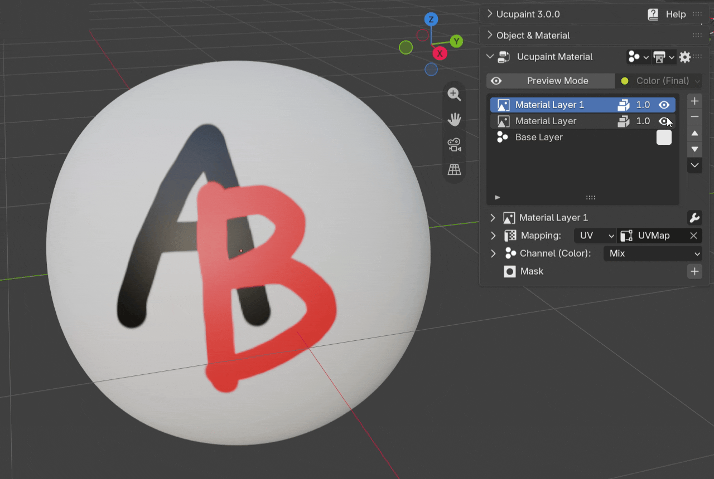
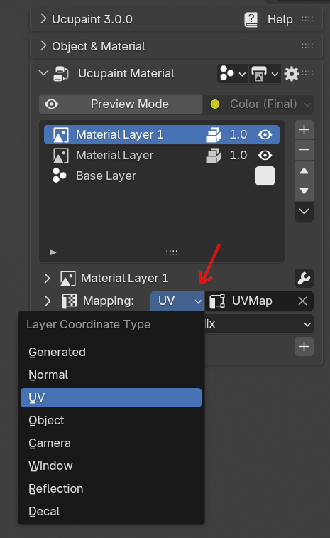
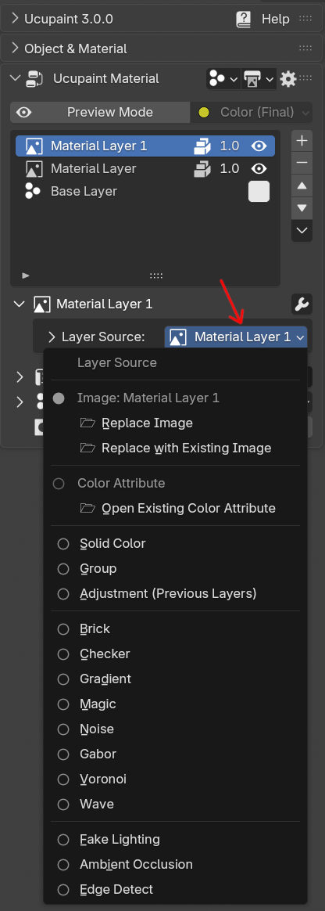
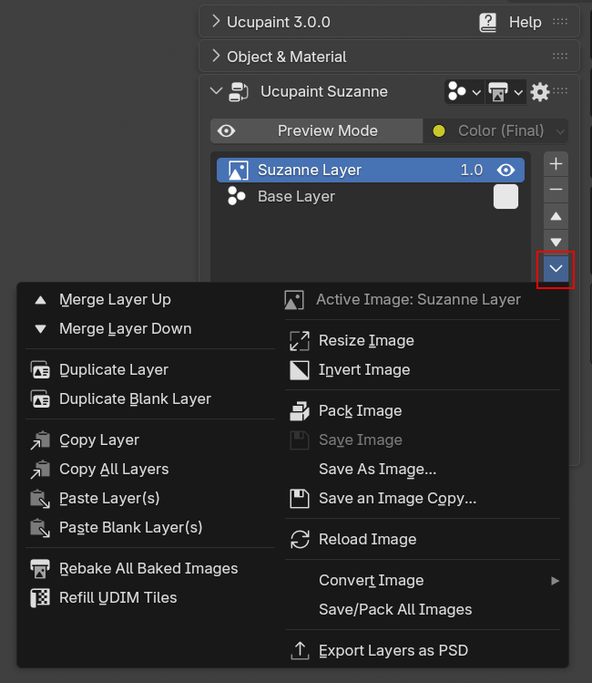

Layer¶
Ucupaint UI is centered around the layers. After creating a Ucupaint node, Ucupaint UI will show the layer list with the Base layer as the first layer.
 |
|---|
| Layers list of Ucupaint. It will have at least a base layer |
Base Layer¶
The base layer is the channel input values of the Ucupaint node, which can also be accessed in the channel settings. Base layer is always at the bottom of the layer stack and can't be removed.
| Base layer demo |
Add New Layer ¶
You can add new layers by pressing the + button. There are various layer types that can help you finish your texturing process.
 |
|---|
| Add layer menu |
If you choose Image > New Image, a dialog box will appear.
New Image Layer Options¶
 |
|---|
| New image layer dialog box |
Here are the explanations of the options when creating a new image layer:
- Name: Name of the layer, which is also the name of the created image.
- Channel: Channel that will be used by the layer.
- Resolution: Resolution of the created image.
- 32-bit Float: More precision for the image created, useful for painting height, but will use a lot more disk space.
- Interpolation: Pixel filtering interpolation that will be used for the render. Choose
Closestif you want to create pixel art textures andCubicif you want to paint the height. Everything else will be enough by using the defaultLinear. - Mapping: Texture Mapping method that will be used for rendering.
- Use UDIM Tiles: Create UDIM tiles based on the UV Map chosen. This will automatically be enabled if you choose a UV map that has UV islands placed outside the 0.0-1.0 range. To disable this automatic UDIM detection, you can disable
Enable Auto UDIM Detectionin addon preferences. (*TODO: More explanation about UDIM in separate page *) - Use Image Atlas: Use a shared image atlas image for multiple layers and masks. This is to circumvent the maximum image limit of Blender's OpenGL renderer mentioned in Pink Material page
Painting an Image Layer¶
After creating a new image layer, you can start painting to the image layer by going to Texture Paint mode. You can do that by changing Object Mode to Texture Paint on the Blender viewport menu or by pressing Ctrl+Tab and choosing Texture Paint.
| Example of creating image layers and painting them |
Layers in Ucupaint work like layers in any other image editing software. So if we create another layer and draw over it, it will cover the layer below.
Reordering Layers¶
You can reorder the active layer by clicking the arrow buttons beside the layer list.
 |
|---|
| Reordering layers |
Saving the Image Layers¶
After you paint a layer, you'll notice that there is an asterisk beside the layer name, that means the image is edited and haven't been saved yet. If you save the blend file, all images used in Ucupaint will automatically be saved or packed inside the blend file. In Blender 5.2 or newer, there is a prompt to tell you there are unsaved images, but whether you choose to click the toggle or not, when saving the blend file, Ucupaint will always save all the images used in Ucupaint node(s).
 |
 |
|---|---|
| Asterisk icons mean images are edited but not saved yet | Packed icons mean images are packed in the blend file |
Layer Parameters And Options¶
Layer Visibility¶
The eye icon in the layer list is used to set the layer visibility.
 |
|---|
| Toggling layer visibility on and off |
Layer Opacity¶
Layer opacity is controlled by the slider on the left of the layer visibilty icon.
| Layer opacity slider in action |
Layer Mapping¶
A layer will use UV mapping by default, but you can change it to another mapping type.
 |
|---|
| Types of layer vector |
Be aware that if you're using a dynamic mapping like camera or window, the baked channel images will still be static.
Mapping Transformation¶
You can transform your mapping using translate, rotation, and scale sliders.
| Mapping transformation demo |
Mapping transformation is only available for non-decal mapping.
Layer Source¶
You can change the layer source to a different one and retain its mask and modifier settings. Use this button to change the layer type.
 |
|---|
| Change layer type options |
Renaming Layer¶
To rename a layer, double-click the name of the layer in the layer list and type the name of the layer. If your layer is an image layer, you'll actually also be renaming your image name.
| Renaming layer |
If you already learnt about masks, make sure you select the active data to be the layer, otherwise you'll be renaming the mask or custom data.
Layer Special Menu¶
Layer special menu can be accessed below the layer move up & down button. It contains many operators contextual to the selected layer and selected image data.
 |
|---|
| Layer Special Menu |
Merge Layers¶
There are two operators for merging layers, Merge Layer Up and Merge Layer Down. Currently, this only works with an image layer as the active layer. The merging process is using blender bake system internally so it can take a while if you're using large resolution and UDIM.
The options for merging layers are:
- Main Channel: Channel for merge reference, you can only choose one.
- Apply Modifiers: This will apply the modifiers in the active layer.
- Apply Neighbor Modifiers: The merge process will include the modifiers of the neighbor/other layer for the merging.
Duplicate Layer¶
There are two operators for duplicating a layer, Duplicate Layer is for duplicating a copy of the active layer with all the pixel data if it's an image layer, all the mask pixel data (if there's an image mask) and all the modifiers and settings. Duplicate Blank Layer will duplicate the layer with all the modifiers and settings, but all the layer and mask pixel data will be blank.
The options for duplicating a layer are:
- Duplicate Packed Images: Only available if there's packed image data in the active layer. This will duplicate the packed image into a new image, disabling this will reuse the image data in the duplicated layer.
- Duplicate Images on disk: Only available if there's an image sourced externally from disk in the active layer. Enabling this will duplicate the actual image into a new file on disk.
Copy & Paste Layers¶
There are two copy layer operators, Copy Layer will only copy the active layer and Copy All Layers will copy all layers in the active Ucupaint node. You can only paste the layer in the same blend file opened, as you cannot paste the layer in different blender instance for example.
For pasting the layer, there's Paste Layer and Paste Blank Layer(s), paste blank behaves similarly to duplicate blank, it will paste the layer with all the settings and modifiers, but the image data will be blank. There will be also option similar like duplicate like Duplicate Packed Images and Duplicate Images on disk depending if there are packed images or ondisk images.
Also, if there's a copied baked image layer/mask, there will be an option to Rebake Baked Images, so if the layer is pasted to objects with different shapes, you can immediately rebake the images.
Extra Operators¶
Rebake All Baked Images¶
The operator Rebake All Baked Images will rebake all baked image layers and masks. More explanation can be found in the bake as layer/mask page
Refill UDIM Tiles¶
If you already have many image layers/masks that use UDIM and want to add new UDIM tiles since you modified the UV Map, you can use Refill UDIM Tiles to quickly add new UDIM tiles based on the new UV Map. (TODO: Dedicated explanation about UDIM workflow in Ucupaint)
Contextual Image Operators¶
Some operators in the layer special menu are only applied to the selected active image data. Those operators are Resize Image, Invert Image, Pack Image, Save Image, and Convert Image.
Convert Image¶
In Convert Image submenu, there are some operators that you can use to convert images.
- Convert to Float/Byte Image: You can convert to a high/lower precision image.
- Convert to UDIM/Non-UDIM Image: You can convert the active non-UDIM image to become a UDIM image or vice versa
- Convert to Image Atlas: Convert the active image to use an image atlas so it will share image data to other image layers and masks. Or convert back to a standard image from an image atlas.
- Convert All Images to Image Atlas: Convert all images used in the current Ucupaint node to use image atlas. This will only be applied to packed images and images that have no transformation mapping.
Export Layers as PSD¶
Exporting to PSD layers is currently only available in Ucupaint Plus. More explanation about this can be found in the dedicated page.
Layer Types¶
There are several layer types that can be used in Ucupaint.
Image¶
Other than creating a new layer image explained here, you can also open an image from disk, or open an existing image in the current blend file. (TODO: Open Image from materials/Open images to single layers explanations)
Color Attribute¶
Color attribute can be used as a layer. There's also a special color attribute editor in edit mode.
| Adding a new color attribute layer and editing it in edit mode |
You can assign selected vertex/polygons to a certain color in edit mode. There will be buttons to assign them with White, Black or a custom Color. The color assigned in vertex select mode will bleed through all the corners of the connected polygons. In polygon select mode, the assigned color will only affect the selected polygons.
Solid Color¶
Solid Color layer contains only a single color and can be useful if you want to paint the mask first, then edit the solid color later.
| Solid color layer demo |
Geometry types¶
Fake Lighting¶
Fake lighting will calculate fake lighting based on a given vector and matrix. If you're using camera space, it can be used for a Fresnel effect. Be aware that if you're using camera space, the baked channel will be static.
Ambient Occlusion¶
Ambient occlusion will create a dark color around the corner area for the objects. This layer is heavy to use, so it's better to bake it as an image after you finish tweaking the settings.
Edge Detect¶
Edge detect will add white color around the edge proximity of the mesh. Like the Ambient Occlusion layer, this is a heavy realtime layer to use, so it's better to bake it as an image if you finish tweaking the settings.
Adjustment¶
Adjustment layer is actually just a layer that uses the previous layer as the source data, then it will add a modifier on top of it. More explanation can be found in the modifier page.
Texture¶
You can use Blender's generated textures as a layer, for example Noise, Magic, Brick, Voronoi, etc.
Bake to Layer Types¶
You can use a baked texture as a layer, for example AO, Cavity, Bevel. Be aware that the baking process may take a while to finish, depending on your system and settings. Various bake-to-layer types are explained here.
Group¶
Group layer can combine several layers into one layer and add a mask or a modifier on top of it. This can be really slow if you're using many layers and channels at the same time.
| Layer group demo |
Layer List Options¶
This feature is currently still experimental, but you can make the layer list cleaner with layer list options.
| Layer list options demo |
The options for layer list options are:
- Expandable Subitems: Enabling this will make layers with masks or custom data expandable. When you click the subitems (Mask or custom channel data), it will make the mask/custom data active.
- Inline Subitems: Enabling this will make the item in the layer list show only one data. This option can only be enabled if
Expandable Subitemsis enabled.